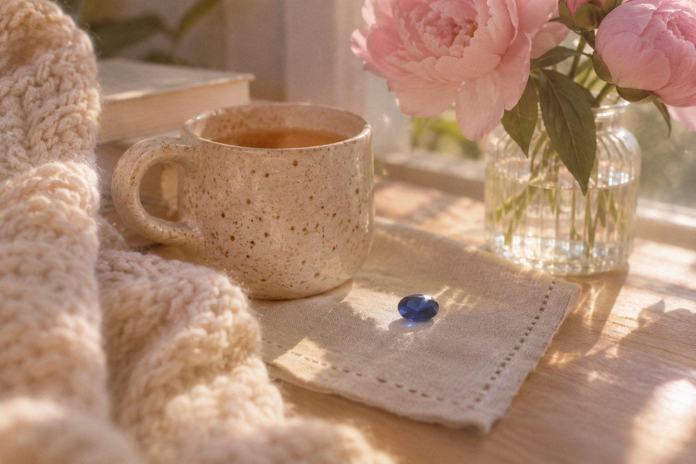

You have a favorite mug, a favorite side of the bed, and very strong opinions about which blanket is the good blanket. Everyone thinks you're easy to figure out. That's probably your greatest trick. Taurus (April 20 to May 20) has a birthstone called sapphire, and its deep blue tells a very private story.

The Taurus everyone knows
Why Does Everyone Think Taurus Is So Grounded?
You're the girl who would happily cancel Friday night plans in exchange for good food, clean sheets, and absolutely nobody asking you to get dressed.
You know exactly what you like. You've been ordering the same thing at your favorite restaurant for two years. Why risk a perfectly good dinner?
Your friends come to you when their lives get complicated. You listen, offer something to eat, and somehow make everything feel a little less dramatic.
There's something about the ordinary things that becomes extraordinary when someone shares them with you.
The Taurus nobody sees
What Are You Holding So Deep Inside?
For someone who seems perfectly content with the present, you spend a surprising amount of time remembering the past.
You remember how someone smelled when they hugged you. You keep little things from people who probably forgot giving them to you.
And when you fall for someone, your imagination quietly starts making room for them in your future.
In George Kunz's 1913 book The Curious Lore of Precious Stones, Taurus's stone is sapphire.
Its deep blue mirrors the feelings you rarely put into words.
Everything you love leaves a little mark on you.
More than a stubborn girl
Is Taurus Really Just Stubborn?
Someone changes the plans at the last minute, and suddenly you're being called stubborn.
Lovely.
Nobody knows that you'd already picked your outfit, imagined the evening, and spent half the afternoon looking forward to it.
You get attached to little routines because they often contain your favorite memories. Even a particular seat on the bus can mean something to you.
When someone tells you to just move on, you wonder how they manage to leave things behind so easily.
They see a girl who hates change. They rarely notice how deeply things matter to you.
Behind closed curtains
Why Do Old Memories Feel Like Home?
It's midnight. You're wrapped in your favorite blanket, scrolling through old photos instead of going to sleep.
You find a picture from a day that felt completely ordinary at the time. Suddenly, you'd give anything to spend another afternoon exactly like it.
You put on a song you haven't heard in months. Of course, you remember every word.
Maybe deep blue is the color of everything you've loved enough to keep somewhere inside yourself.
Tomorrow, you'll probably tell everyone you had a quiet evening.
Nobody needs to know how many memories kept you company. Some things belong only to you.
When your deep blue side wants out, Gemflow turns sapphire into slow-moving light on your phone, so you can watch your inner color for once.
Sapphire is the Taurus birthstone, a deep blue that mirrors everything quietly treasured inside you.